← 返回阅读库 · 原论文目录
论文讲解阅读文档 · 新模型 · v090
Token Turing Machines[2211.09119]
视频时长 00:05:07；讲解文字 2,474 字符；提取讲解画面 12 张。按视频原顺序阅读，每段文字保留时间戳。
文字来自整段视频的自动语音转写，按自然停顿分段，并与 PPT / 论文页面 / 演示画面对齐。未将讲解压缩为摘要；术语、数字和口述公式请结合画面及原论文核对。 阅读稿已校正规范部分明确术语误识别；原始逐字稿和每处修改记录另行保留。
讲解画面为源视频截图（640×360），不是可编辑 PPT 文件。全片按每秒 2 帧扫描内容变化，逐步展开页保留；连续动画保留代表画面。清晰度受源视频限制。
下载完整资料包 · 含离线 HTML、PDF、Word、全部 PPT 画面和字幕。
原论文与材料
Token Turing Machines · 下载完整 PDF（12 页）
按时间阅读
00:00:00–00:00:45 · 画面 001
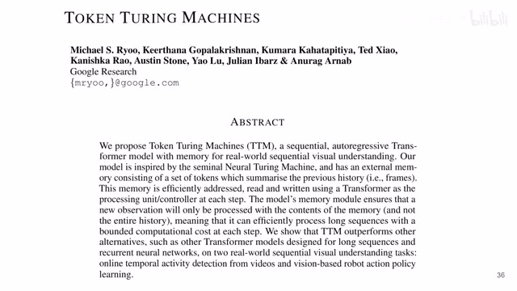
00:00:00–00:00:45 · 画面 001大家好啊，今天我们来快速数一篇论文，Token Turing Machine。这篇论文呢，是这个 Michael Ryoo，也是我们这个频道的老朋友了。我们之前介绍过他的很多的工作，包括这一篇最相关的是这个 Token Learner。其实这一篇呢，就是 Token Learner 的一个应用。本质上来说呢，就是你通过学习的方法在很多个 token 中总结出较少的一些 token，然后这些 token 呢作为记忆来保存下来。这样在处理长序列的过程中呢，你就不用去使用过去的整个的长的序列，你只需要维持这个记忆就好了。所以呢，它是一个相对轻量的这个 auto regressive base。所以呢，它是一个相对轻量的这个 auto regressive 的这样的一个方法。那下面我们具体来看。
00:00:45–00:01:44 · 画面 002
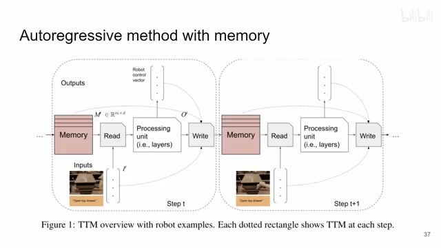
00:00:45–00:01:44 · 画面 002那你看到的这个方法呢，很直接，就是我在上一个时刻会保留一些系统的状态啊。这些东西呢，作者叫 memory。其实它跟 rnn 里面非常像嘛。跟当前的这个系统的输入，比如说是 image，比如说是这个文字这个指令对吧，他们一起做融合啊。这里作者说一个这是一个读的操作。其实本质上呢，就是总结一下这个 memory 和这个 input，然后呢送到这个 processing unit 里面。
这个 processing unit 呢，给出我们当前时刻的输出。那比如说你是做时序上的 action classification 等等这些东西对吧，你也这里输出一个结果。那么最后呢，你这个 processing unit 出来的结果加上 memory 加上你的输入对吧，大家还有你的输出大家一起来总结一下，总结一下写入重新写到这个 memory 里面。这个 memory 呢，就供下一个时刻来使用了对吧。这是一个经典的这个 auto regressive 流程。本质上呢，跟 rnn 这些东西呢也是非常相近的。只不过呢，具体来说呢，就是这些所有的东西。
00:01:44–00:02:26 · 画面 003
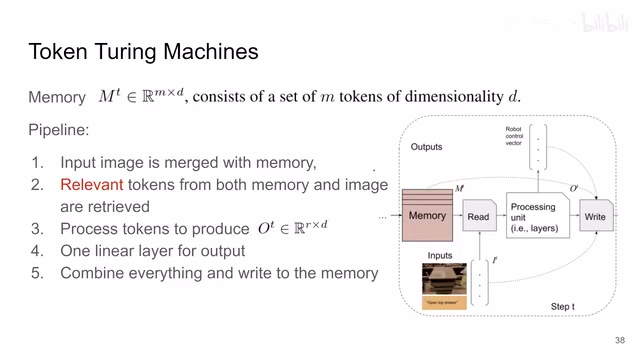
00:01:44–00:02:26 · 画面 003对吧，比如说 memory 也好，你的 input 也好，auto 等等这些东西，它都是一串 token 的形式。那至于里面具体的操作呢，processing unit 它其实就是一个标准的比如说 transformer 或者 mlp mixer 这些东西，一个标准的模型把一串 token 变成另一串 token 这些都好说对吧。但是呢，最重要的就是这个 read 和 write。那么这里的操作呢，就是 token summarization。
就是把一大串很长的这个序列的一些 token 通过学习的方法总结出数量相对较少的 token。那一说到这里，熟悉 token learner 的朋友啊，立刻就想要到了对吧。那就用 token learner 这些东西啊来做这些事情。那具体来说呢，这个 token summarization 就是说我这里有 p 个 token 啊，压缩成这个 k 个 token 啊，这个 k 呢是远远的小于 p 的啊，就这样结束了对吧。那么你如果详细来说呢。
00:02:26–00:02:57 · 画面 004
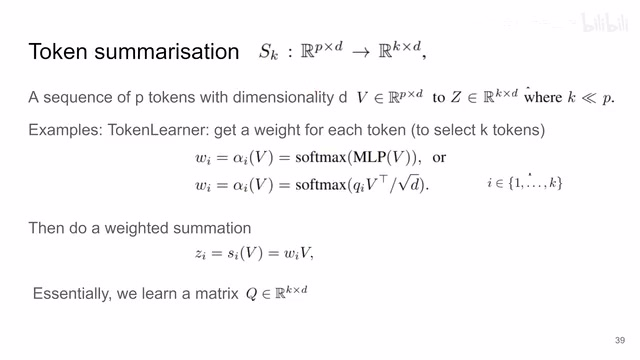
00:02:26–00:02:57 · 画面 004那么每一个输入的 token 呢，针对你的一个输出的 token，你都可以学出一个值来。然后呢，根据学出来这个值把这些输入的 token 这个 v 对吧，加权求出来。这个加权和呢，又是你输出的这个 token 它的这个值。那你如果想最终输出 k 个 token，你就把这个过程重复 k 次，非常简单直接的方法。
00:02:57–00:02:58 · 画面 005
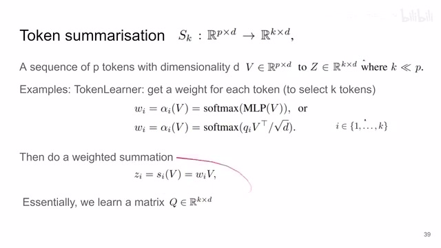
00:02:57–00:02:58 · 画面 00500:02:58–00:03:00 · 画面 006
00:02:58–00:03:00 · 画面 006那么来到这边，你的读操作其实就是把一堆 token 压缩成一小部分 token，你的写操作也是把所有的这些 token 压缩成一个你的 memory。那继续来看呢对吧，你读的时候是把你的 memory 还有 input 这些 token 啊，给他们串起来，然后呢输出这个 z。这个 z 呢送到这个 processing unit 里面变成这个 o。这个 o 结合上你的 memory 结合上你的输入的
00:03:00–00:03:13 · 画面 007
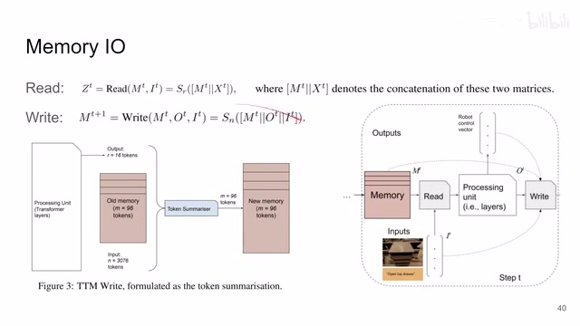
00:03:00–00:03:13 · 画面 00700:03:13–00:03:14 · 画面 008
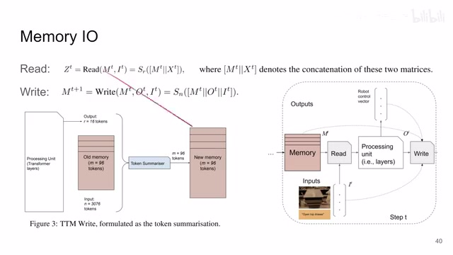
00:03:13–00:03:14 · 画面 00800:03:14–00:03:53 · 画面 009
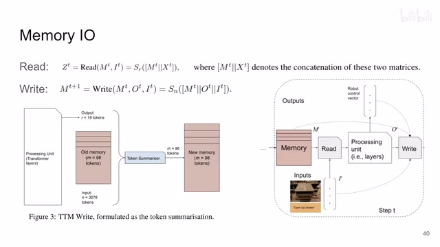
00:03:14–00:03:53 · 画面 009这个图片对吧？你把它们结合起来，然后呢，再过一个这个 token summarization。那就像这里一样，你的 processing unit 给你 16 个 token，你的过去的 memory 给你 96 个 token，你的输入有 3076 个 token，对吧？把这些 token 总结一下，总结成新的 96 个 token，那这个呢就是你的新的 memory，你就可以在下一步迭代里面再使用了。那这个呢就是本文的最核心的，对吧？read 和 write 就是通过总结 token 的方法。
00:03:53–00:04:40 · 画面 010
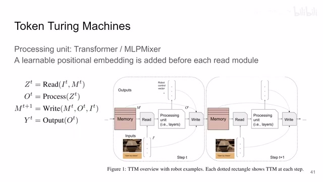
00:03:53–00:04:40 · 画面 010那么再往下呢，对吧？还有这个 processing unit，我们之前也说过了，它就是一个纯纯的 transformer 或者是 mlp mixer 这种东西，一系列的 token 映射成另一系列的 token，这个数量不变。然后呢，作者还说了这个 memory 里面，对吧？不仅是 token 它本身的这个内容是重要的。
这个 token 在 memory 中的位置也是很重要的，所以呢，在每个读操作之前，在总结之前，对吧？他们都要加一个这个 learnable positional embedding 来把这个位置的信息给它编码进去。那这些都是常规的操作了，好的。那么以上就是本文主要的技术细节了，那本质上就是多次的把很多个 token 投到数量相对较少的 token，通过这样一个相对代价较小的 memory 来记住过去的这个历史的状态。
来达到一个处理长序列的目的。那这里呢，作者的实验包括比如说这个是 temporal activity detection，还有作者后面有这个 robotics 相关的实验，感兴趣的朋友呢可以到原文中查看。那像这里呢，这个 vivit 是一个视觉的 encoder 嘛，对吧？它就是把我们的图像进来之前先变成一个个 token。
00:04:40–00:05:06 · 画面 011
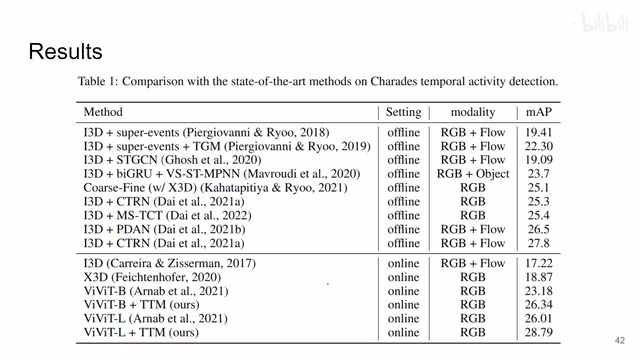
00:04:40–00:05:06 · 画面 011然后呢，再跟我们 memory 这个通讯图人们设计这些东西想结合好的。那么以上就是我对这个视频的一个快速的整理啊，那么感谢您的收看，再见。
00:05:06–00:05:07 · 画面 012
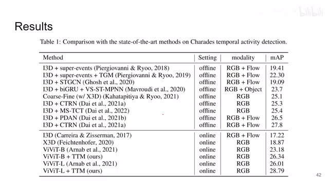
00:05:06–00:05:07 · 画面 012转写与来源说明 · 0 个自动复核提示
保留 14 个原始语音片段，0 个片段触发自动复核提示。提示仅用于定位可能的术语、重复或识别问题，不等于已确认错误。
讲解画面为源视频截图（640×360），不是可编辑 PPT 文件。全片按每秒 2 帧扫描内容变化，逐步展开页保留；连续动画保留代表画面。清晰度受源视频限制。
原视频：paper/合集_2026-10-16_新模型/[论文速览]Token Turing Machines[2211.09119].mp4
SHA-256：6a5a9f31d9d2d768c03a4c4bff6aef250ad7f7f8fc2f416d7989a39a5130d76a
全文按视频语音与画面制作。原论文可从上方链接下载；完整资料包保留全文、原始逐字稿、字幕和校对记录。